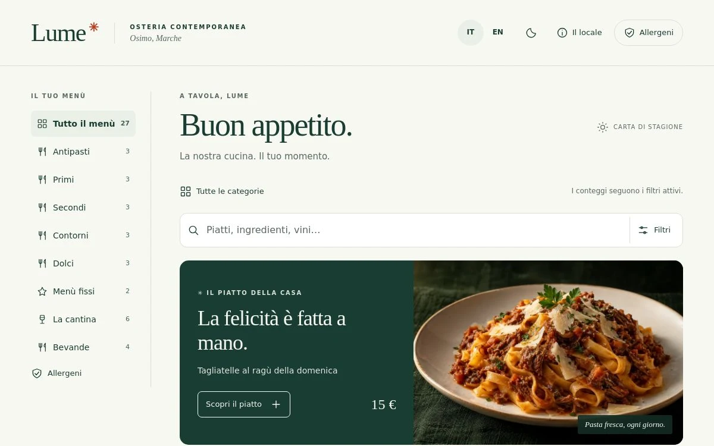

← Torna ai progetti
Lume · Menù digitale
Un menù digitale progettato intorno alle persone.
Apri la demo Il frame qui sotto apre lo stesso sito.

IL PROGETTO
Un'idea.
Una direzione precisa.
Interfaccia per consultare i menù da smartphone, con particolare attenzione a leggibilità, velocità e informazioni utili.
La sfida
Rendere un menù ricco di voci e allergeni semplice da navigare, senza sovraccaricare lo schermo.
La soluzione
Ricerca, filtri per portata, riepilogo allergeni sempre accessibile e modalità scura, con componenti riutilizzabili.
PARTIAMO DA UN'IDEA
Mettiamo a fuoco
il tuo progetto.
Partiamo da quello che vuoi migliorare: presenza online, lavoro quotidiano o servizi ai clienti. Definiamo insieme il passo successivo.
Raccontaci il tuo progetto